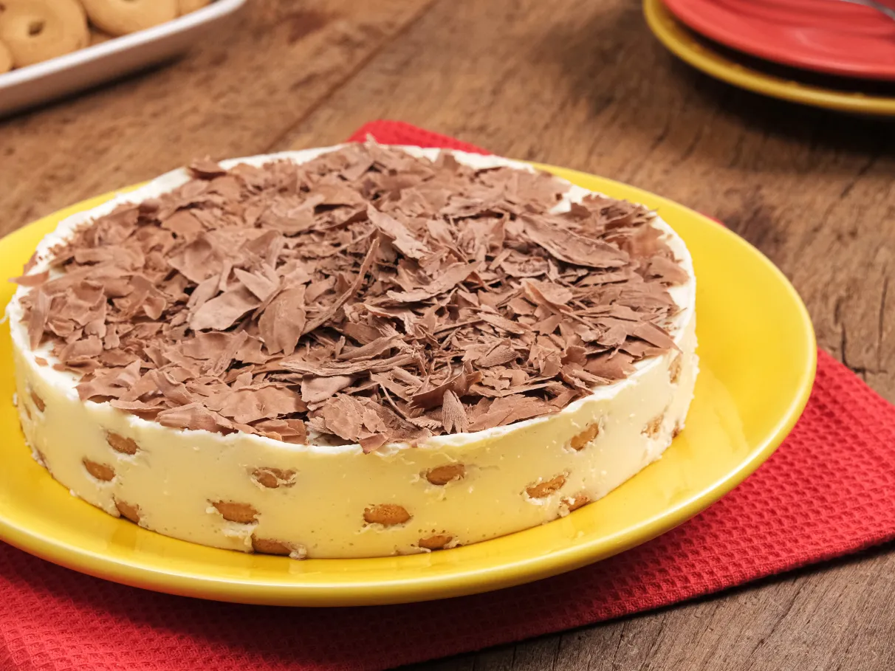

Ingredientes
-
• 3 colheres de maisena
• 5 colheres de chocolate em pó
• 2 ovos
• 1 xícara de açúcar
• 1 lata de leite condensado
• 1 lata de creme de leite
• 1 pacote de bolacha maria
• 1 l de leite (e mais um pouco para molhar as bolachas)
Modo de Preparo
- Em uma panela, misture o amido de milho, o chocolate em pó, o açúcar, os ovos, o leite condensado e o leite, levando ao fogo até engrossar.
- Desligue o fogo, misture o creme de leite e deixe esfriar por alguns segundos antes de montar.
- Em um refratário, intercale camadas de bolachas Maria levemente embebidas no leite com camadas generosas do creme de chocolate.
- Finalize com o creme por cima e leve à geladeira para firmar antes de servir.
